Mah Jian
UI + UX | UX Research | Heuristic Evaluation | Usability Metrics
Our goal is to create a platform for Chinese immigrant seniors to connect with their culture and people of similar backgrounds in their community with a senior friendly interface.
Roles and Responsibilites
Project Context
Tools Used
- Remote and In-Person UX Research
- Usability Testing
- User Interviews
- Heuristic Evaluations
- User Personas
- Ideation Sketching
- Wire-framing
- Prototyping
- Fall 2022
- School Project
- Figma
- ProtoPie
- Adobe Illustrator
THE PROBLEM
Senior immigrant Chinese citizens face difficulties finding a community with similar interests and cultures around them and have troubles using event finder apps due to language barriers, cultural differences, and accessibility issues associated with attending events listed on the app. These factors may limit their ability to access and participate in events.
THE SOLUTION
Incorporate a theme that the target user group will be familiar with
- First impressions are extremely important
- The interface is inspired by traditional non-digital interfaces that many Chinese immigrants will be familiar with
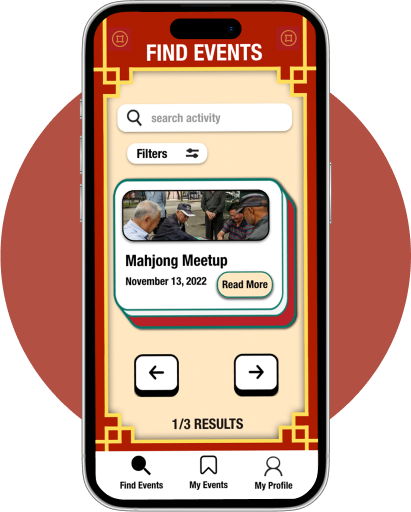
Address significant problems with other event finder apps that were identified through user research and heuristic evaluations.
- Event finder apps may be primarily designed and marketed in English, making it difficult for older Chinese people to use and understand them.
- They may not be designed with the needs of older people in mind, such as larger fonts, clearer interfaces, or compatibility with assistive technology.
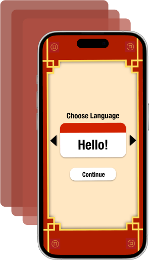
Recommend events that align with the interests of the intended user demographic.
- Chinese immigrant seniors may face cultural differences when using event finder applications, as their preferences and interests may differ from those of the dominant culture.
- They may have different social norms and expectations around event attendance, such as a preference for attending events with family or close friends rather than alone.
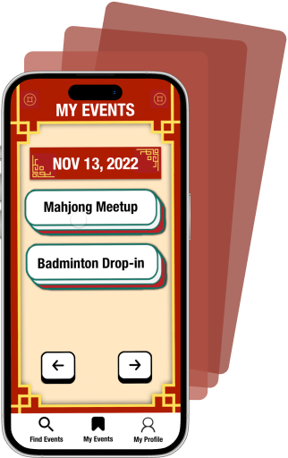
UX RESEARCH
User Interviews
The goal was to understand the needs, preferences, and challenges faced by senior Chinese immigrants when it comes to finding events in their local community, and how we can design a mobile application that meets their needs.
- The same 5 participants were asked a series of open ended questions in order to uncover user behaviours, motivations and concerns ensuring my redesign was designed for real people.
Heuristic Evaluation
The evaluation goal was to identify usability issues in the application's design and user interface that may cause difficulties for senior Chinese immigrants.
- Each of my 3 other partners used the early prototype seperately and took notes of all the usability issues. After we all took our notes, we conveined and discussed each of the issues.
Usability Testing
The goal was to evaluate the ease of use and effectiveness of the application's design and user interface for senior Chinese immigrants when finding events in their local community.
- We gave the participants a list of scenarios and tasks to perform using our prototype interface while we observed their behaviour and recorded any observations.
RESEARCH METHODS
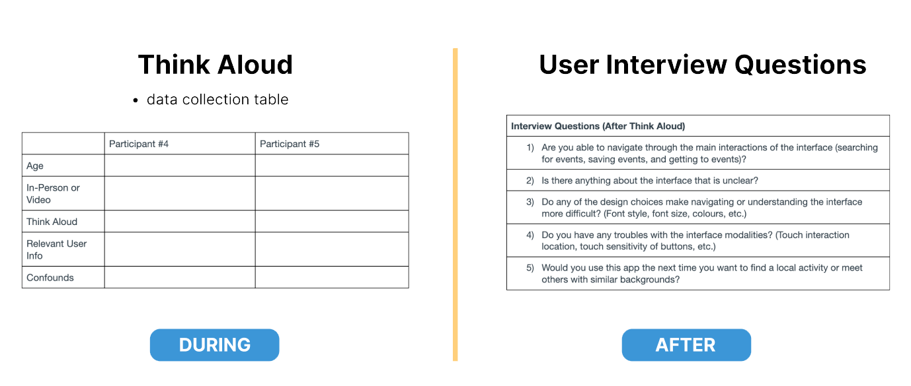
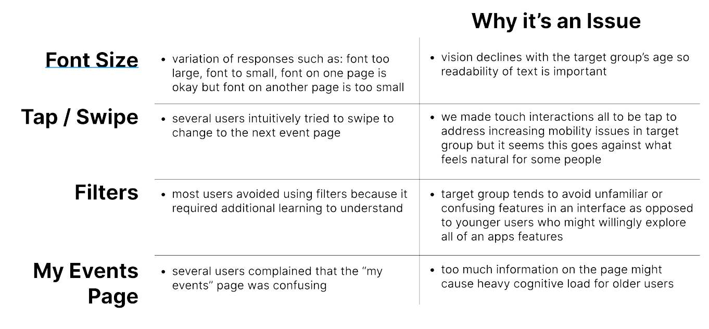
PERSONAS
Using personas such as Mei Ling and Jian Liu is important when creating a new event finder application because it helps to build empathy and understanding of the target audience. Personas also help ensure that the design is user-centered and meets the needs of the users. Finally, personas can guide the decision-making process, making it easier to prioritize features and functionalities that are most important to the users.
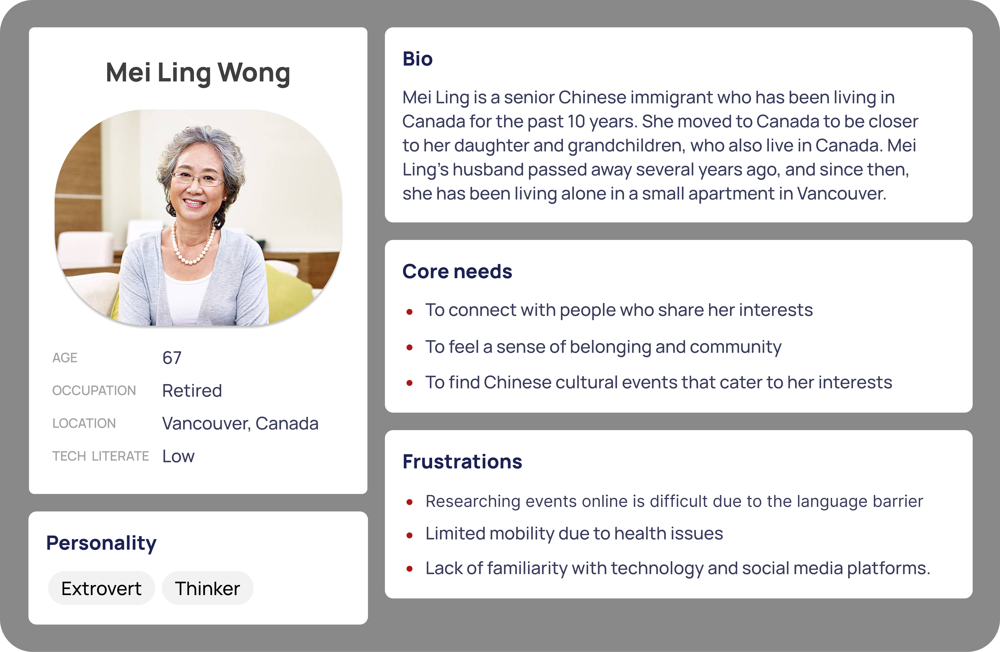
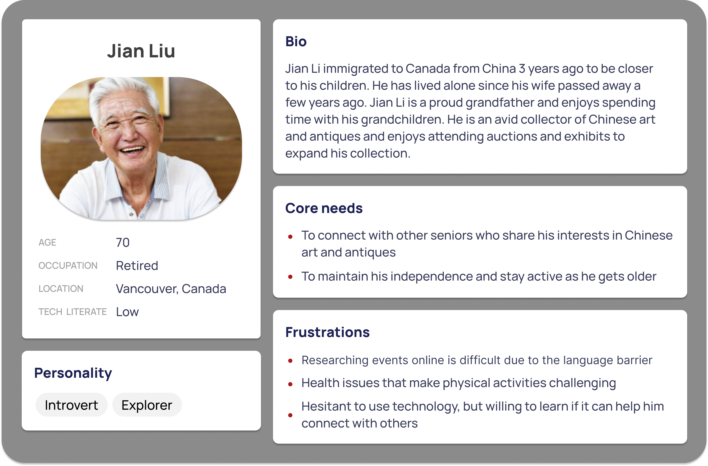
SKETCHES
After brainstorming a range of possible solutions that may address the user's needs identified in the define phase, We first sketched out our ideas on paper and then developed low fidelity wireframes on Figma of what a possible solution would look like.
Ideation Wireframe #1
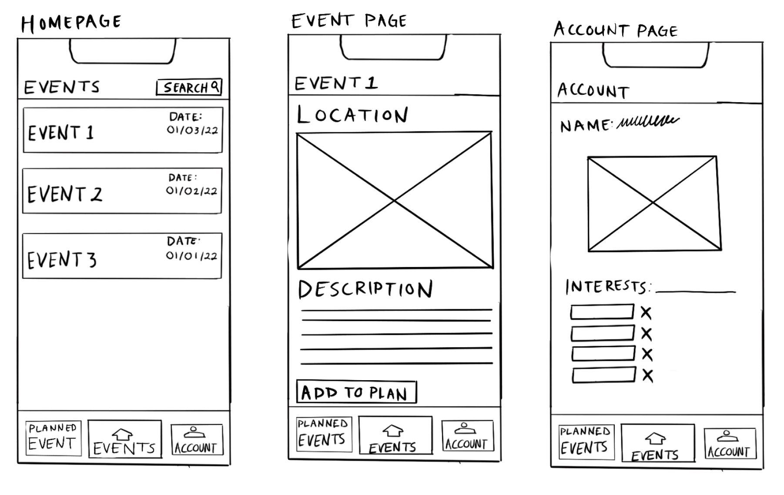Ideation Wireframe #2
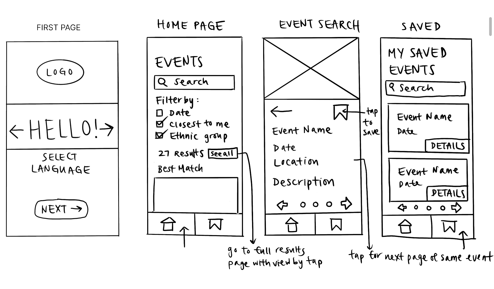Combined Wireframe
We wanted to combine all the best features from the 2 ideation wireframes to a combined wireframe.
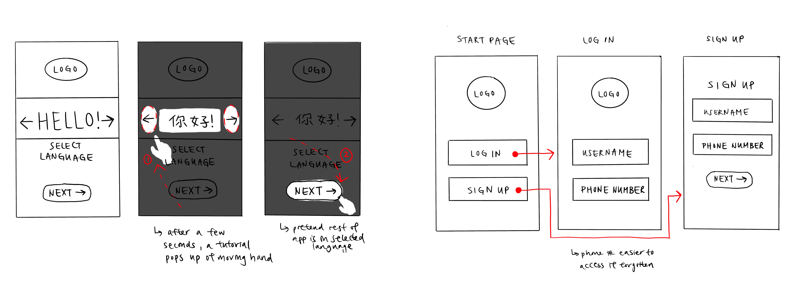
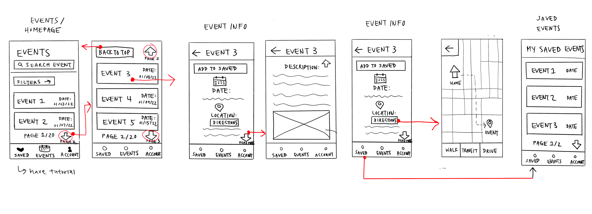
EARLY PROTOTYPES
Prototype 1
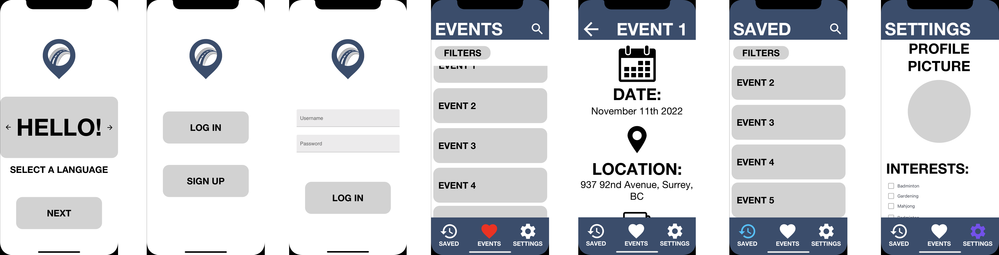
Prototype 2

FINAL DESIGN
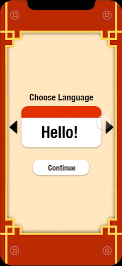
Choose Language
- We have included a choose language page to accommodate for the language barriers experienced by our user group

Find Events Page
- The user can tap the arrows below the event card, and swipe across the screen to navigate between pages.
- These interactions aim to accommodate a variety of users by incorporating multiple methods of interaction.

Read More about Event
- To find out more on a given event and different ways to get to the location, users select the read more button located on the event card.
- The directions button within gives commute options like walking, driving, or transit.
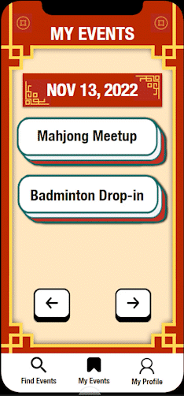
My Events Page
- My events in accessed through the bottom toolbar and shows events that the use had previously saved and wants to remember for later.
CONCLUSIONS
Overall, this project was a valuable learning experience that highlighted the importance of designing for accessibility and user-centred design. By prioritizing the needs and preferences of the target demographic, I was able to create an effective and user-friendly application that promotes social engagement and inclusion for immigrant seniors.
What I've Learned
Don't fully invest into an idea just yet, iterate, iterate, iterate
- During the ideation phase, we made the mistake of investing too much time in a solution that didn't fully meet user needs.
Use Data! Its part of the process for a reason.
- We often met crossroads when making design decisions and by going back to the data helped us to back up our decisions.